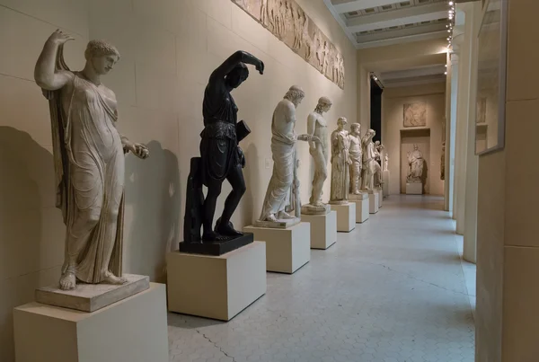
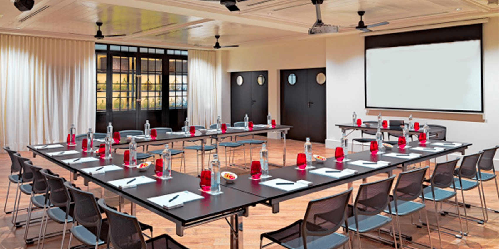
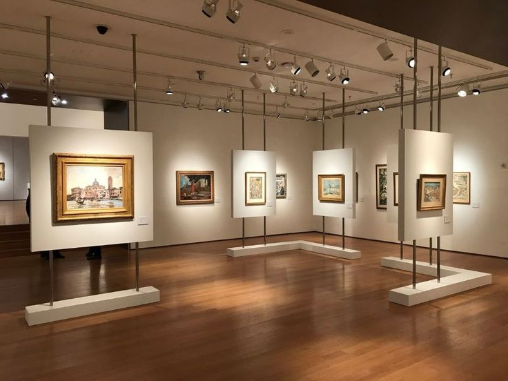

Les salles à ne pas manquer
Salle de Statues

Qui dit musée dit forcément statue. Dans la salle des statues vous serez ébouli par immenses statues. De l'Argentine jusqu'à la Russie passant par Afrique et sans oublier l'Italie, de la statuaire antique à la sculpture contemporaine, venez découvrir ces merveilles qui vous feront voyager autour du globe terrestre.
Salle Immersive
Chez nous, l'art n'est pas quelque chose que l'on regarde simplement. Ici chez _, l'art se ressent ! Grâce à notre salle immersive, vivez les arts à l'aide de vos 5 sens. Que ce soit en réalité virtuelle ou en réalité, c'est une expérience coup de coeur pour ceux qui aiment l'inattendu.

Salle de Conférence

Au musée trop kool, nous possèdons une salle de conférence qui peut jouer plusieurs rôles. Elle peut être utilisées comme:
- Ateliers artistiques
- Dessin et illustration
- Peinture et création artistique
- Sculpture et modelage
- Activités de groupe
- Visites guidées
- Quiz sur l'art
- Conférences sur l'art
- Conférences sur l'histoire de l'art
- Rencontre avec des artistes
Salle Photo
La photographie, un art très reconnue, car il s'agit d'un lagage visuel universel. L'Homme voit de centaines de milliers de spectaculaires choses devant lui et il crucial d'éterniser ces souvenirs ! Venez voir les photos les plus spectaculaires de jeunes photographes de chez nous. Vous ne serez pas déçus !
